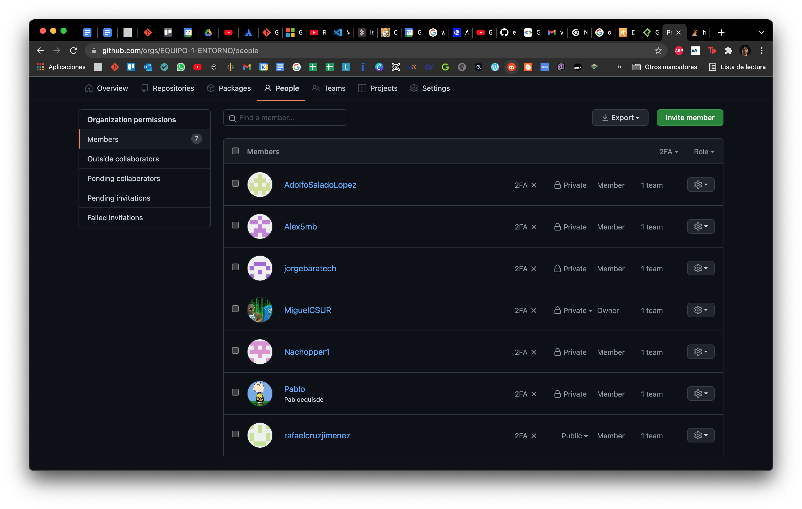
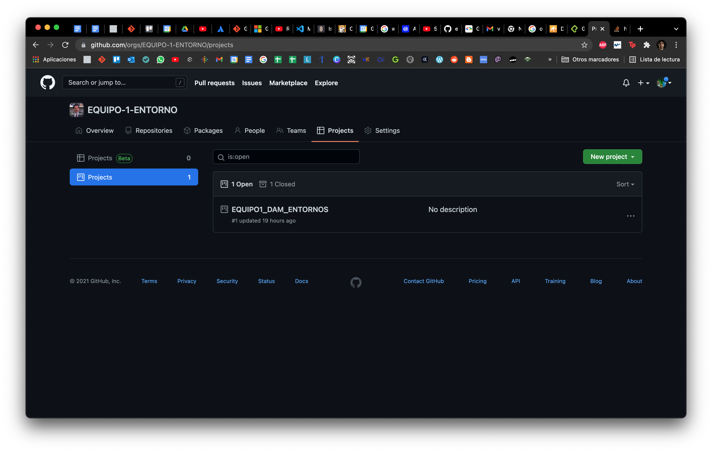
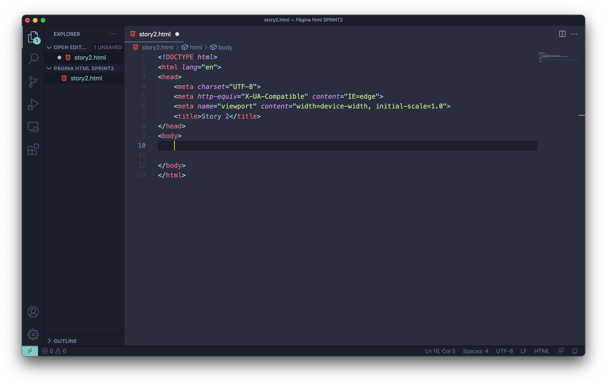

Accedes a github y arriba a las derechas click en Sign Up, sigues las instrucciones. Para registrarte.
Una vez en tu perfil, hay un icono de + en la arriba a la derecha. Un desplegable da varias opciones para crear, clicamos en project y ponemos el nombre que deseamos, elegimos si es público o privado y lo creamos.
Una vez más en el + que hay arriba a la derecha, seleccionamos en New repository, con el nombre deseado. Al que podemos agregar archivos en la pestaña Add File cogiendo y arrastrando los archivos que deseemos. Se nos pedirá que realizemos un commit, al que le damos título y completamos.
